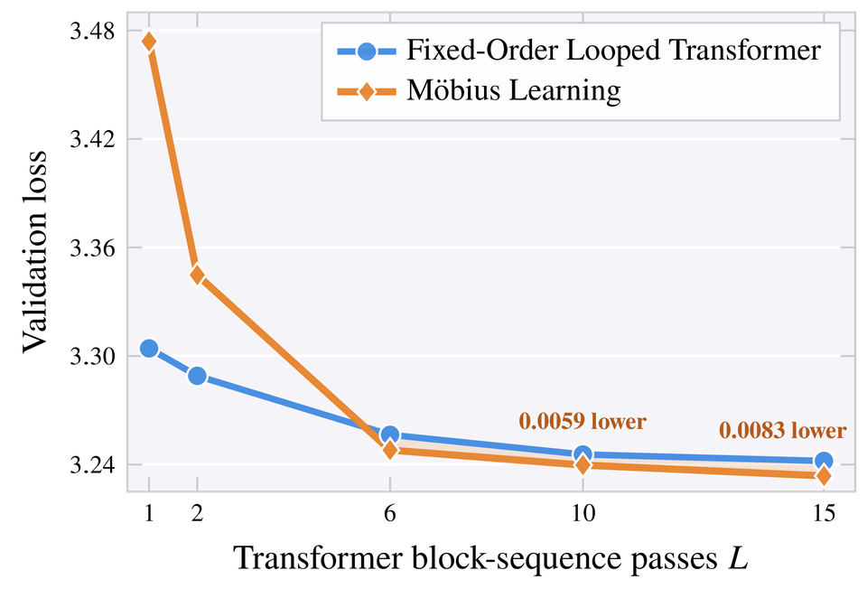
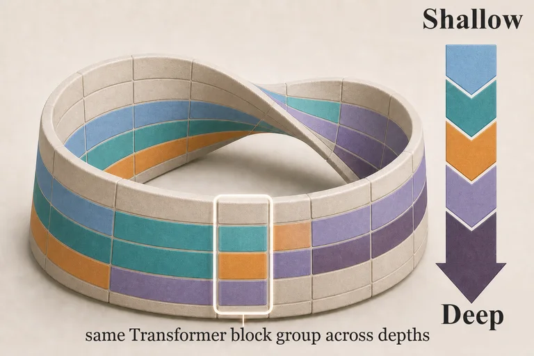

Version 1 · Preliminary Technical Report
Möbius Learning
Cyclic Depth Folding in Transformers
Looped Transformers repeat a fixed block order. Möbius Learning turns that order into a training axis.

{kind=link}

Major finding: Möbius Learning outperforms fixed-order looped Transformer training at larger loop depths.
In briefIn brief
TL;DR
A fixed-order looped Transformer increases computational depth by reusing Transformer block groups in one fixed order. Möbius Learning turns block order into a training axis through cyclic depth folding: cyclic shifts train every block group at shallow and deep positions, producing depth-role superposition.
In four-worker experiments with a modded GPT-2 small (124M) trained with Muon on 2.5B FineWeb tokens, Möbius Learning outperforms the fixed-order looped Transformer at L = 6, 10, and 15. Each comparison uses the same 2.5B-token budget and the same loop depth, measured by the number of complete passes through the Transformer block groups.
Empirical evidence
Exact results
Validation loss after 2.5B training tokens at each loop depth.
| Loop depth L | Applications K | Looped loss | Möbius loss | Δ |
|---|---|---|---|---|
| 1 | 4 | 3.3042 | 3.4739 | +0.1697 |
| 2 | 8 | 3.2890 | 3.3448 | +0.0557 |
| 6 | 24 | 3.2564 | 3.2480 | −0.0084 |
| 10 | 40 | 3.2456 | 3.2397 | −0.0059 |
| 15 | 60 | 3.2420 | 3.2337 | −0.0083 |
Δ = Möbius loss − looped loss. Negative values favor Möbius Learning.
Mechanism
How cyclic depth folding works
A fixed-order looped Transformer repeats one fixed block-group order for every local batch. Möbius Learning fixes the starting point by originating-worker index and applies the same block groups in a worker-indexed cyclic order.
For a batch with originating-worker index s, source-relative depth is measured from that path’s starting point. Across starting points, every block group occupies every within-pass source-relative depth exactly once. Each block group’s parameters are therefore optimized across shallow and deep roles: depth-role superposition.
{kind=link}
Execution strategy
Möbius parallelism
Möbius parallelism distributes block groups across workers and executes the worker-indexed cyclic orders induced by Möbius Learning.
{kind=link}
Experimental setting
Matched comparison
- Model
- Four-worker modded GPT-2 small (124M), trained with Muon on FineWeb.
- Token budget
- Both methods train on the same 2.5B tokens.
- Loop depth
- Both methods use the same L complete Transformer block-sequence passes.
- Block applications
- Both methods execute the same K = 4L block-group applications per input path.
- Result
- Möbius Learning outperforms the fixed-order looped Transformer at L = 6, 10, and 15.
Research status
Next steps
Next versions will extend the current four-worker, 124M-parameter, 2.5B-token study across worker counts, model scales, token budgets, systems measurements, and representation-level analyses of depth-role superposition.
Reference
Citation
If this report is useful in your work, please cite Version 1:
@misc{zhu2026mobiuslearning,
title = {M{\"o}bius Learning: Cyclic Depth Folding in Transformers},
author = {Zhu, Tongtian},
year = {2026},
note = {Version 1 (Preliminary Technical Report)},
url = {https://raiden-zhu.github.io/mobius-learning/}
}